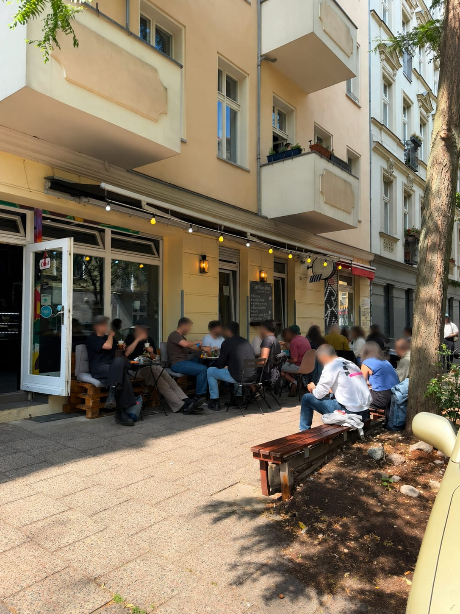

Jeden Morgen frisch gebacken
Bougatsa mit Feta oder Vanillecreme, Spinat-Feta-Pita, Sesamringe, Croissants mit Pistazie oder Nougat. Aus dem Ofen, direkt aufs Blech.
Cinnamon & Sugar ist eine kleine familiengeführte griechische Bäckerei mit Café in der Lychener Straße in Prenzlauer Berg. Brioche-Sandwiches frisch getoastet, Bagels frisch belegt, Bleche mit Bougatsa noch warm aus dem Ofen — und Kaffee, der das Frühstück ernst nimmt.

Alles in der Auslage ist für den Morgen gemacht — und das meiste ist bis zum Nachmittag weg.
Bougatsa mit Feta oder Vanillecreme, Spinat-Feta-Pita, Sesamringe, Croissants mit Pistazie oder Nougat. Aus dem Ofen, direkt aufs Blech.
Fünf Bagels und zwei getoastete Brioche-Sandwiches — Lachs und Ei, Speck und Avocado, Mozzarella-Pesto, mediterran mit Feta.
Freddo Espresso und Freddo Cappuccino kalt aufgeschäumt, der klassische Frappé, dazu Chai, Matcha und heiße Schokolade mit Sahne.
Die fünf Dinge, nach denen unsere Gäste zuerst greifen.
Zwei Minuten vom Helmholtzplatz, mitten in Prenzlauer Berg. Montags Ruhetag — sonst öffnen wir früh.
Wir liefern im Umkreis von 3 km über Wolt und Uber Eats — und du kannst jederzeit vorbestellen und abholen.